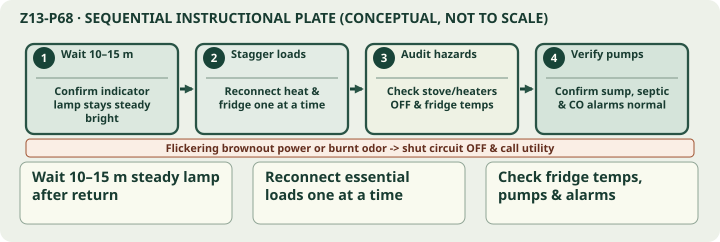

Z13-P68 · Home survival and utilities · New manuscript
Follow safe phased restoration when grid electricity and utilities return
Prevent circuit overloads, unnoticed appliance fires, and spoiled-food consumption as residential services come back online.
When it applies · Households returning to grid power, gas, or water after a multi-hour or multi-day interruption.
Equipment · Indicator lamp, appliance thermometers, fridge/freezer food-safety chart, and utility restoration notices.

Actions
- When the indicator lamp stays steadily lit (not flickering or dim) for 10 to 15 minutes, reconnect essential appliances ONE AT A TIME—starting with heating/cooling controls and refrigeration before high-draw laundry, ovens, or EV chargers—to prevent simultaneous startup surge trips.[U01]
- Inspect the house immediately upon power return: verify no stove burners, irons, or space heaters were left switched ON, verify refrigerators/freezers resume normal cooling, and check appliance thermometers against official USDA/FoodSafety.gov keep/discard charts before eating chilled food.[U01, F04, F05]
- Confirm sump pumps, septic lift pumps, and water softeners cycle normally without tripping breakers, and verify CO/smoke alarms return to normal green/standby status.[U07, U12, U01]
Failure recognition · Flipping every breaker and heavy appliance on simultaneously during unstable brownout restoration, tripping panels and eating warmed food without checking temperatures.[U01, F04]
Verify · Confirm voltage steady, zero unintended heat appliances running, chilled food checked by thermometer, and pumps/alarms operating cleanly.[U01, F04, U12]
Stop or change course · Flickering partial power, burning odors, tripping breakers, or failed heating/refrigeration restart require switching affected circuits OFF and calling utility or licensed trades.[U01, U04]
Evidence and editorial notes
- F04 · USDA / FDA / CDC · Food Safety During Power Outage (current web edition)
- Section: Refrigerated food and power outages · Conditions: Refrigerator starts cold; keep door closed
Support: An unopened refrigerator keeps food cold for about four hours. Follow the per-item discard chart after loss of temperature control. Never taste to test.
Limitations: Door openings accelerate warming; appliance thermometer is needed to verify temperature. · Conflicting evidence: None; retained for Z15 reconstruction.
Editorial note: Maintains five-pack integrity. · Specialist reviewer: Food safety and household preparedness
Primary source · checked 2026-11-24 - F05 · USDA / FDA / CDC · Food Safety During Power Outage (current web edition)
- Section: Frozen food and power outages · Conditions: Freezer door closed; typical household unit
Support: A full freezer holds temperature about 48 hours, a half-full freezer about 24. Use ice crystals or measured 40°F or below to evaluate refreezing where the chart permits.
Limitations: Varies by freezer insulation, ambient room temperature, and door seals. · Conflicting evidence: None; retained for Z15 reconstruction.
Editorial note: Maintains five-pack integrity. · Specialist reviewer: Food safety and household preparedness
Primary source · checked 2026-11-24 - U01 · FEMA / Ready.gov · Power Outages (current web edition)
- Section: Power Outages > Preparing and Responding Safely · Conditions: Residential utility electrical outages of hours to days
Support: Keep phones/medical batteries charged, maintain flashlights instead of candles, unplug sensitive appliances to protect against restoration surges, and verify backup power plans for electrically dependent medical devices.
Limitations: Home outage durations vary widely by grid damage; extended winter outages require heat/evacuation contingencies. · Conflicting evidence: None; aligns with CPSC and NFPA.
Editorial note: Establishes household outage baseline and medical-power priority in Z13. · Specialist reviewer: Emergency management and electrical safety
Primary source · checked 2026-11-24 - U04 · FEMA / Ready.gov · Home Fires (current web edition)
- Section: Home Fires > Smoke Alarms, Fire Extinguishers, and Escape Plans · Conditions: Residential fire prevention during outages and supplemental heating
Support: Test smoke alarms monthly on every level and outside sleeping areas, keep two exits clear from every room, store fuels outside living spaces in approved containers, and evacuate immediately if a fire exceeds incipient containment.
Limitations: Candles and improvised indoor flames dramatically elevate outage house-fire deaths. · Conflicting evidence: None; integrates with CPSC CO-alarm rules (C09).
Editorial note: Anchors outage fire prevention, fuel storage, and exit readiness in Z13. · Specialist reviewer: Fire prevention and residential safety
Primary source · checked 2026-11-24
Current assessment · W2C-E014 (2026-11-25) · Open: source scope does not match the claim; escalated: Supported: smoke alarms on every level including the basement; batteries twice a year unless 10-year lithium; replace units every 10 years or per manufacturer; keep flammable liquids away from heat sources; refuel generators outdoors. Limits: Not on the page although U04 asserts them: monthly testing, alarms outside sleeping areas, two exits from every room, storing fuels outside in approved containers, extinguisher thresholds, and grease-fire guidance. - U07 · U.S. EPA · Septic Systems: What to Do after the Flood (Current web edition)
- Section: Do I pump my tank during flooded or saturated drainfield conditions?; After the flood · Conditions: Flooded or saturated septic drainfield
Support: Conserve water and do not pump while the field is flooded or saturated. Arrange professional inspection and qualified servicing as conditions permit.
Limitations: Avoid use until local or professional directions allow. Tank buoyancy and recovery depend on site and system. · Conflicting evidence: See A02 claim audit for boundaries.
Editorial note: Grounds septic-system limits and outage water conservation in Z13. · Specialist reviewer: Onsite wastewater engineering and public health
Primary source · checked 2026-11-25 - U12 · CPSC · CO Alarms (current web edition)
- Section: Home Alarms > Smoke, Carbon Monoxide, and Battery Backup Readiness · Conditions: Occupied residences with fuel-burning furnaces, water heaters, attached garages, or outage generators
Support: Maintain interconnected or battery-backed CO and smoke alarms on every floor and outside sleeping rooms, replace expired sensors on schedule, and keep exterior furnace/dryer/exhaust vents clear of drifting snow.
Limitations: Blocked high-efficiency PVC furnace intake/exhaust pipes in heavy snow can force CO back indoors or lock out heating systems. · Conflicting evidence: None; integrates with C09 and Z13-R03.
Editorial note: Connects winter snow-drift vent inspection to household CO prevention. · Specialist reviewer: Carbon monoxide safety and residential HVAC
Primary source · checked 2026-11-24
Current assessment · A04-U12 (2026-11-25) · Open: support partial or missing (A04): Supports CO alarm placement and battery backup. Smoke alarms and exhaust clearing need independent applicable standards; general combined statement stays open. Limits: Specialist review PENDING (Carbon monoxide safety and residential HVAC); publication HOLD. All release decisions pending.
Source lineage · FEMA Ready.gov Power Outages and Food Safety; new manuscript · Classification · New manuscript.